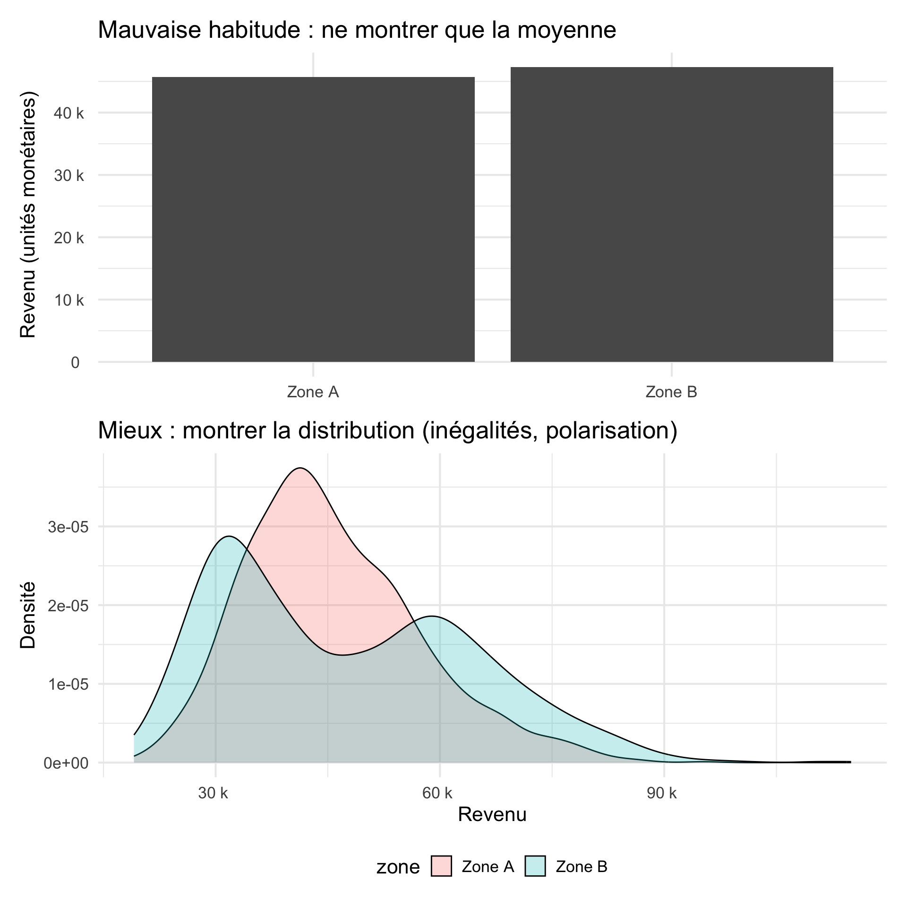
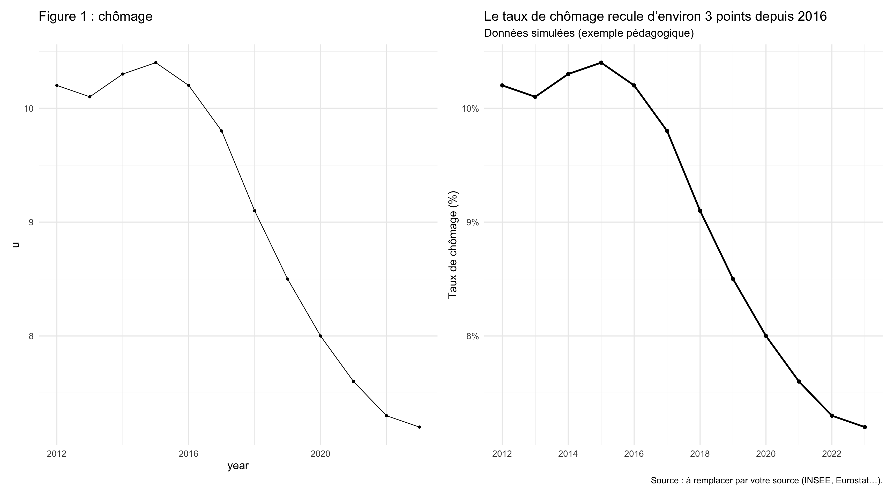
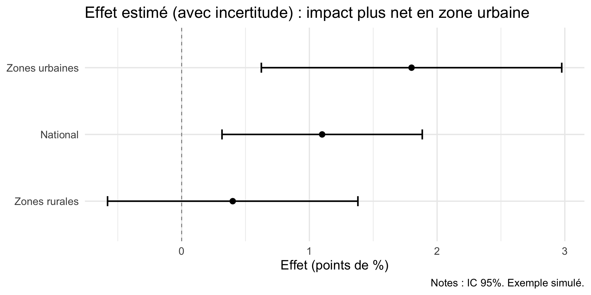

Master GPE
2026-05-02
À la fin, vous serez capable de:
produire 1 figure “prête à coller” dans votre note au ministre :
Une idée → une figure
Lisible en 10 secondes
Autonome : titre + axes + unités + source + notes utiles
Honnête : incertitude, limites, pas de sur-promesse
Rappel: dans une note de décision publique, une figure est un outil d’arbitrage, pas une preuve “pour les pairs”.
Avant de coder :
Astuce
Test express : si votre titre ressemble à “Graphique 1 : Résultats” alors votre figure n’a pas encore de message.
Une mauvaise figure ressemble à une exportation brute :
trop de décimales, codes internes, surcharge visuelle
“ça montre tout” → donc ça n’aide à décider de rien
Une bonne figure :
sélectionne l’essentiel
guide l’œil vers ce qui compte (hiérarchie visuelle)
laisse le lecteur conclure vite et sans deviner
Trois questions simples :
Même un “simple descriptif” implique des choix théoriques.
Checklist rapide avant toute figure :
Qui collecte ? quand ? comment ? est-ce représentatif ?
Min/Max plausibles ? valeurs extrêmes ? doublons ?
Données manquantes : pourquoi ? où ?
Définition exacte des variables (glossaire)
Mise en garde
Une valeur extrême peut retourner une recommandation.
Objectif → graphique
Astuce
Règle pratique : si vous avez besoin de 3 légendes + 2 notes pour comprendre, c’est trop.
On simule deux zones avec la même moyenne mais des distributions différentes.

DON’T
“Figure 1 : Revenus”
Axe Y en 1.4e05
Variables inc_tot_log / ps102
DO
Titre = conclusion : “Le revenu médian stagne malgré la hausse du revenu moyen”
Unités intelligibles : “€ / mois”, “%”, “par 1 000 habitants”
Libellés en français courant (pas de codes)

Votre lecteur doit comprendre sans lire le paragraphe :
DON’T
DO
1 résultat central
1 contexte discret
1 annotation utile (événement, réforme, seuil)
Quand votre message repose sur une estimation :
point = estimate
barre = intervalle (IC 95% ou SE × 1.96)
note : niveau d’agrégation / clustering / N

Message : le titre dit-il la conclusion ?
Lisibilité : police OK, axes clairs, unités intelligibles ?
Honnêteté : pas de causalité sur-vendue, incertitude si besoin ?
Autonomie : source + période + notes minimales ?
Simplicité : pouvez-vous expliquer la figure à quelqu’un en 20 secondes ?
Astuce
“Grandmother test” : Êtes vous capables de l’expliquer simplement à votre grand-mère? oncle? ou autres?
Choisissez un indicateur et une comparaison pertinente pour votre sujet de note au ministre:
Livrable attendu :
1 figure exportée en PNG ou PDF
Pour être intégrée dans votre note avec : titre-message, axes, unités, source
Votre objectif n’est pas de “faire joli” :
c’est de rendre une décision plus informée
avec une figure simple, autonome, honnête
Merci !
Pierre Beaucoral - Master GPE